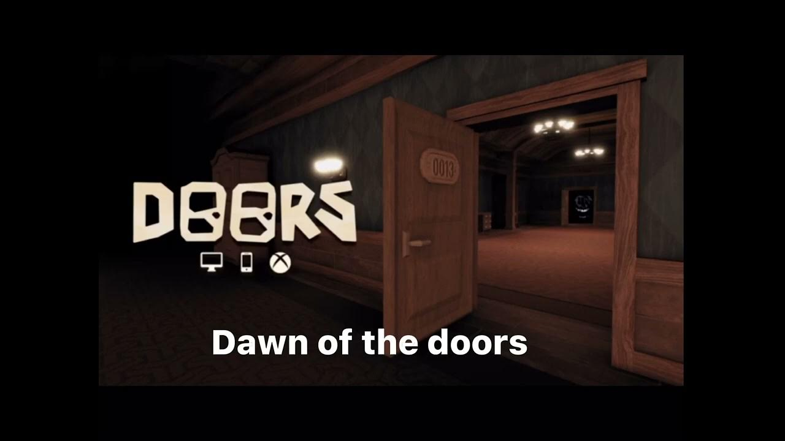

Welcome to Random
We have many things like wikis, info, and much more. Explore and find what interests you!
Doors Monsters
- Rush: Comes from the beginning when the lights flicker. Hide quickly!
- Seek: Chases you twice. Be fast and use vitamins if needed.
- Figure: Can't see but hears very well. Stay crouched. Appears at door 50 and 100.
- Ambush: Similar to Rush but returns multiple times. Hide and time your moves.
- Screech: Lurks in dark places. Look at it to avoid damage.
- Halt: Rare. When in a blue room, follow the screen prompts to avoid danger.